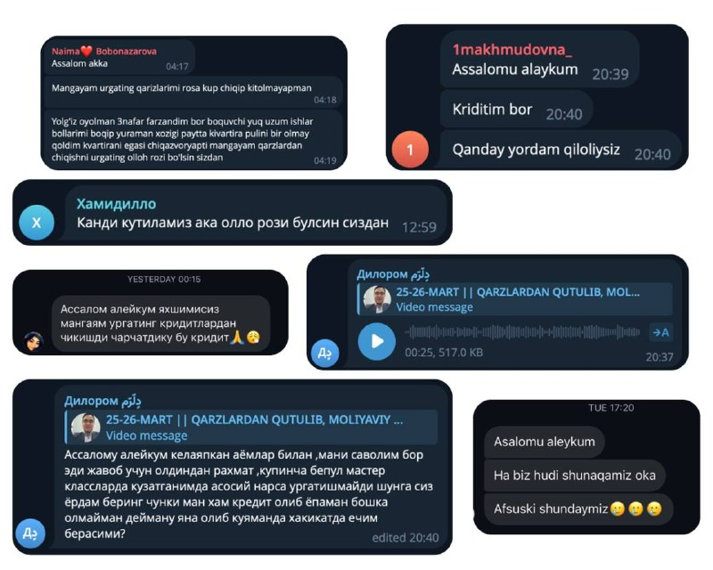

Мен кўп йиллардан бери молия соҳасида фаолият юритаман:

инвестициялар, корпоратив молия, тўғридан-тўғри инвестиция жалб қилиш, фондлар бошқаруви, риск-менежмент, суғурта…
Лекин сўнгги вақтларда менга энг кўп ёзилаётган саволлар, шогирдлар оғриқлари - энг оддий, лекин энг оғриқли муаммолар ҳақида:
— Қарздан чиқа олмаяпман
— Ойлик етмаяпти
— Оилавий бюджет назоратдан чиққан
— Кредитлар босиб кетган
Ва мен бир нарсани тушундим:
одамларда муаммо билим йўқлигида эмас —
балки тўғри, содда ва амалий тушунтириш йўқлигида.
Агар мен ўз билимимни одамларга тушунарли қилиб беролмасам — мен профессионал эмасман.
Шунинг учун қарор қилдим.
🔥 2 кунлик 25-26 март кунлари БЕПУЛ онлайн вебинар қиламан.
Оддий тилда. Амалий. Ҳақиқий фойда билан.
Бу ерда сиз:
— Қарздан чиқиш стратегиясини
— Оилавий бюджетни тўғри бошқаришни
— Пулни назорат қилишни
— Ва молиявий хотиржамликка чиқиш йўлини ўрганасиз
Бу вебинар - “мотивация” эмас.
Бу - амалий ўзгариш бошланиши.
📌 Бепул. Фақат қатнашиш нияти керак.
Илтимос:
Бу постни ўзига керак деб ўйлаган инсонга юборинг.
Қарзи бор дўстингизга.
Қийналаётган яқинларингизга.
Балки сиз юборган битта хабар — кимнидир ҳаётини ўзгартиради.
Мутлақо бепул. 2 кун. Онлайн.
Махсус Муалифлик дарси. Мастер класс. Фақат амалиёт.
👇👇👇
>>>ЁПИҚ Телеграм каналга ҚЎШИЛИШ<<<
👇👇
>>>Вебинар ДАРСга ҚЎШИЛИШ<<<